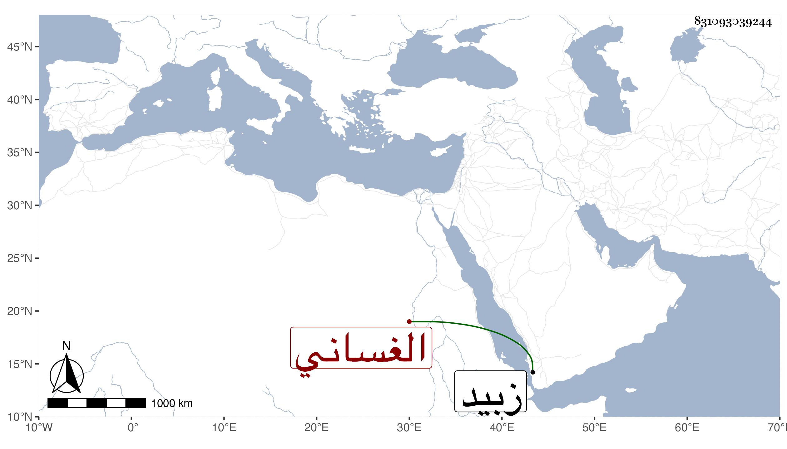

0902Sakhawi.DawLamic.ITO20230111-ara1.EIS1600.831093039244
Biography ID: 831093039244
433
أبو القسم بن أبي بكر الغساني الفقيه الصالح العالم العامل تفقه بالطيب الناشري وسمع الحديث من جماعة وانتفع به جماعة في العلم والعمل وكان يكثر قراءة الأحياء ويفهمه بحيث اختصره ورتبه ترتيبا حسنا وولي الإعادة والإمامة بمدرسة جهة الطواشي ياقوت بزبيد ومات أوائل سنة خمس وأربعين .
